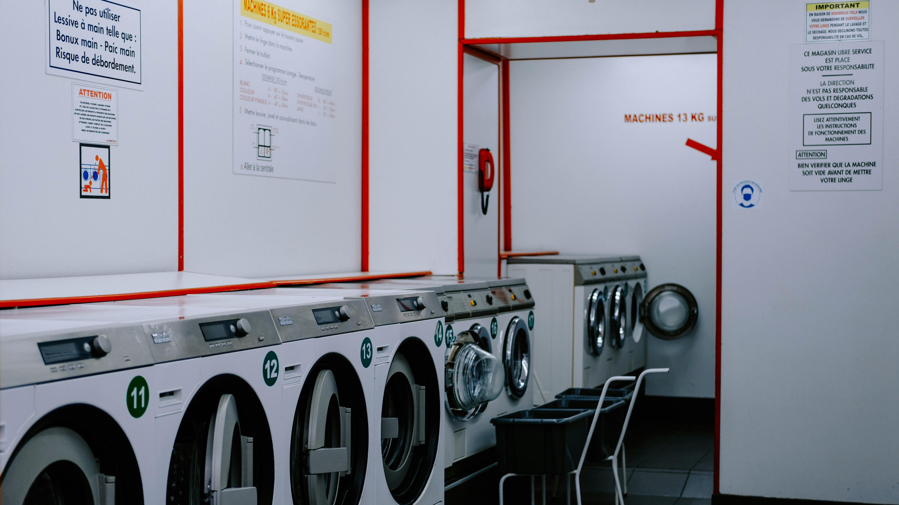

Selamat datang Di Resik Laundry!!


Di tengah kesibukan dan gaya hidup yang serba cepat, kebutuhan akan layanan laundry yang praktis, cepat, dan berkualitas semakin meningkat. Resik Laundry hadir sebagai solusi terpercaya untuk membantu masyarakat menjaga kebersihan pakaian tanpa ribet. Dengan moto “Bersih, Wangi, dan Rapi”, Resik Laundry berkomitmen memberikan pelayanan terbaik untuk setiap pelanggan.
Cuci kiloan adalah layanan laundry di mana pelanggan membayar jasa pencucian berdasarkan berat pakaian (per kilogram), bukan per potong. Layanan ini sangat cocok bagi individu, keluarga, mahasiswa, hingga pekerja kantoran yang ingin mendapatkan pakaian bersih dan rapi tanpa repot.
Cuci satuan adalah layanan laundry di mana pakaian dicuci dan dirawat secara individu atau berdasarkan jenisnya, bukan berdasarkan berat (kilogram). Layanan ini biasanya digunakan untuk pakaian tertentu yang memerlukan perawatan khusus, seperti jas, kebaya, bed cover, jaket, selimut, sprei, pakaian pesta, dan lainnya.
Gorden bukan hanya penutup jendela, tapi juga elemen penting dalam mempercantik interior rumah, kantor, maupun hotel. Namun karena fungsinya yang langsung bersentuhan dengan debu, asap, dan udara luar, gorden mudah kotor dan menyimpan bakteri. Untuk itulah layanan cuci gorden hadir — solusi praktis untuk menjaga kebersihan dan tampilan gorden Anda tetap maksimal.
Bed cover atau penutup kasur adalah salah satu perlengkapan tidur yang memberikan kenyamanan sekaligus menambah estetika kamar. Namun karena penggunaannya setiap hari, bed cover mudah kotor, menyimpan keringat, debu, tungau, bahkan bakteri. Oleh karena itu, cuci bed cover secara rutin sangat penting untuk menjaga kebersihan dan kesehatan tidur Anda.
Layanan jasa yang menawarkan layanan mencuci dan merawat tas, baik itu tas ransel, tas tangan, tas kanvas, dan lain sebagainya. Treatment dilakukan oleh team kami yang terampil dan berpengalaman dalam membersihkan dan merawat tas agar tetap terjaga kualitas dan fungsinya.
Layanan yang menawarkan jasa mencuci dan merawat sepatu dengan berbagai macam jenis dan bahan. Layanan jasa cuci sepatu biasanya dilakukan oleh team kami yang terampil dan berpengalaman dalam merawat sepatu agar tetap terjaga kualitas dan fungsinya.
Karpet adalah elemen penting dalam interior rumah, kantor, hingga tempat ibadah. Selain mempercantik ruangan, karpet juga berfungsi menambah kenyamanan. Namun, karena sering diinjak dan digunakan setiap hari, karpet sangat rentan menjadi sarang debu, kuman, tungau, hingga bau tak sedap. Untuk itu, layanan cuci karpet profesional sangat dibutuhkan.
Jasa laundry yang profesional dan berpengalaman tentu selalu menjaga kualitas pakaian yang dititipkan oleh pelanggan. Karena kami mempunyai metode pencucian yang tepat agar tidak mudah rusak atau pudar warnanya.
Dengan beralih menggunakan jasa laundry terdekat, Anda tentu lebih menghemat waktu dan tenaga yang biasanya dibutuhkan untuk mencuci lalu setrika pakaian. Kini Anda bisa memanfaatkan waktu tersebut untuk kegiatan yang lebih produktif.
Mungkin untuk sebagian orang, beralih menggunakan jasa laundry kiloan itu menghabiskan biaya lebih besar. Tentu sebaliknya apabila Anda memikirkannya kembali, karena apabila Anda menggunakan jasa laundry yang menerima pickup delivery atau antar jemput. Anda bisa menghemat biaya transportasi selain dari waktu dan tenaga.
Selain dari kebersihan yang selalu kami jaga kualitasnya, Sorcha Laundry juga tentu menjamin keamanan dan kenyamanan bagi pelanggan setia Resik Laundry. Kami selalu memberikan garansi untuk semua pelanggan yang mempercayakan kebutuhanya terhadap kami. Maka Anda tidak perlu khawatir lagi tentang keamanan, kecepatan, dan kebersihan dari layanan Resik Laundry.
Cuci satuan adalah layanan laundry di mana pakaian dicuci dan dirawat secara individu atau berdasarkan jenisnya, bukan berdasarkan berat (kilogram). Layanan ini biasanya digunakan untuk pakaian tertentu yang memerlukan perawatan khusus, seperti jas, kebaya, bed cover, jaket, selimut, sprei, pakaian pesta, dan lainnya.
Cuci satuan adalah layanan laundry di mana pakaian dicuci dan dirawat secara individu atau berdasarkan jenisnya, bukan berdasarkan berat (kilogram). Layanan ini biasanya digunakan untuk pakaian tertentu yang memerlukan perawatan khusus, seperti jas, kebaya, bed cover, jaket, selimut, sprei, pakaian pesta, dan lainnya.
Cuci satuan adalah layanan laundry di mana pakaian dicuci dan dirawat secara individu atau berdasarkan jenisnya, bukan berdasarkan berat (kilogram). Layanan ini biasanya digunakan untuk pakaian tertentu yang memerlukan perawatan khusus, seperti jas, kebaya, bed cover, jaket, selimut, sprei, pakaian pesta, dan lainnya.
📞 0812-3456-7890
📍 Jl. Melati No. 123, Jakarta
📧 ResikLaundry@gmail.com